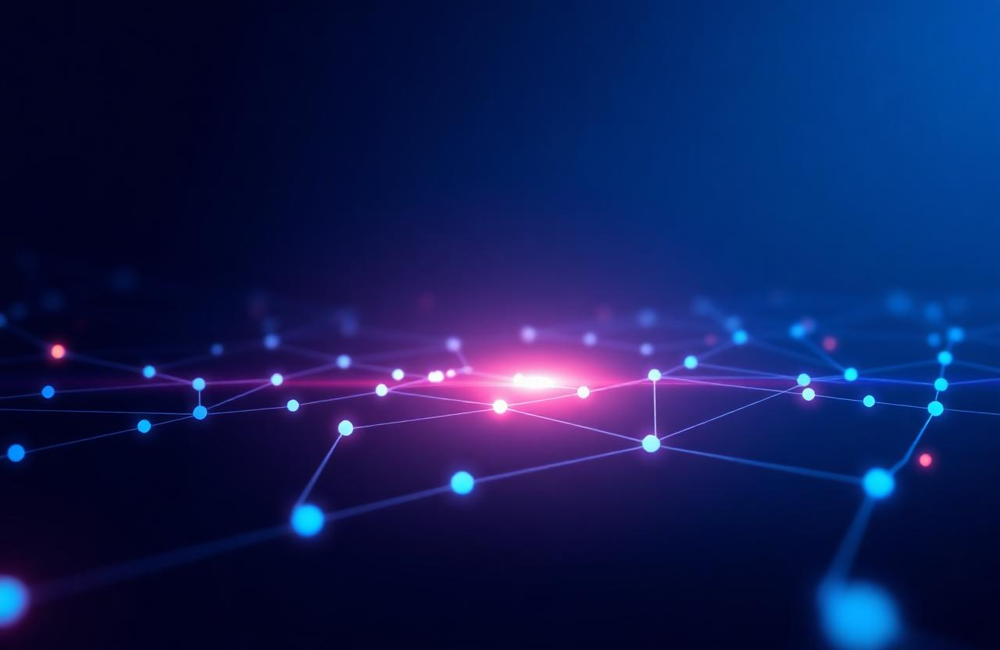

Pantau seluruh data sensor IoT Anda secara realtime dengan tampilan modern, cepat, responsif, dan terintegrasi Firebase.
Dibuat untuk sistem monitoring IoT modern
Data langsung diperbarui secara realtime menggunakan Firebase Realtime Database.
Monitoring data sensor lebih mudah dengan visualisasi modern dan responsif.
Sistem login aman menggunakan Firebase Authentication.
Tampilan otomatis menyesuaikan di HP, tablet, maupun desktop.
Sistem ini dirancang untuk mempermudah monitoring perangkat IoT seperti ESP32 dan ESP8266 secara realtime dengan dashboard modern, ringan, dan mudah digunakan.
